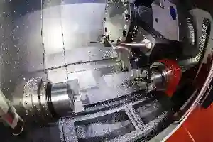
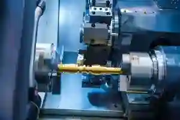
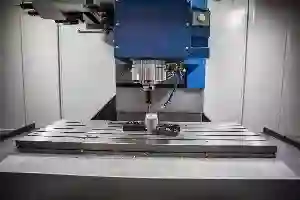
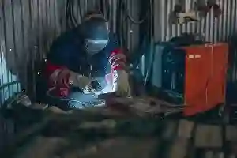
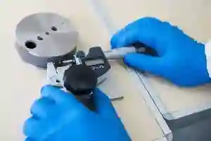
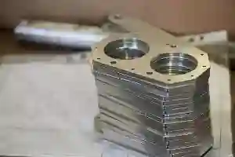

Özel Talaşlı İmalat Hizmetleri – Aymaksan Makine
AYMAKSAN, sanayiye yönelik üretim ihtiyaçlarını tek bir çatı altında toplayan, mühendislik temelli ve süreç odaklı bir üretim yaklaşımı sunar. özel talaşlı imalat hizmetleri, firmanın üretim kabiliyetlerinin merkezinde yer alırken; CNC teknolojileri, kalite kontrol altyapısı ve prototip destekleriyle entegre bir yapı oluşturulur. Bu yaklaşım, yalnızca parça üretimine değil, aynı zamanda süreç optimizasyonuna ve sürdürülebilir kaliteye odaklanır.
Üretim süreçleri; teknik resimden başlayarak malzeme seçimi, işleme stratejisi, ölçüm ve doğrulama adımlarını kapsayan çok katmanlı bir yapı ile yönetilir. Ankara CNC talaşlı imalat firması olarak AYMAKSAN, hem yerel hem de ulusal ölçekte farklı sektörlerin beklentilerine yanıt verebilecek esnekliğe sahiptir. Her proje, standart bir üretim kalıbı yerine, ihtiyaca özel olarak ele alınır ve bu sayede fonksiyonel, tekrarlanabilir ve izlenebilir sonuçlar elde edilir.
Hizmetlerimiz

Özel Talaşlı İmalat

CNC Tornalama

CNC Frezeleme ve Dik İşleme

Kaynak ve Montaj Hizmetleri

Kalite Kontrol ve Ölçüm Hizmetleri

Prototip Üretim ve Ar-Ge Desteği
Hizmetlerimiz Yaklaşımı
AYMAKSAN’ın hizmet yaklaşımı, yalnızca makine parkuruna değil, aynı zamanda bilgi birikimi ve proses yönetimine dayanır. Üretim sürecinin her aşamasında teknik analiz yapılır, tolerans gereksinimleri değerlendirilir ve üretim yöntemleri buna göre belirlenir. CNC tornalama hizmetleri ve CNC frezeleme ve dik işleme gibi süreçler, parça geometrisine ve kullanım amacına göre optimize edilir.
Bu yaklaşım sayesinde seri üretim kadar düşük adetli ve özel projelerde de yüksek verimlilik sağlanır. Üretim öncesi yapılan fizibilite çalışmaları, hem zaman hem de maliyet açısından avantaj oluşturur. Süreç boyunca şeffaf iletişim ve teknik geri bildirim mekanizmaları devrede tutulur; böylece müşteriler yalnızca sonuç değil, sürecin tamamı hakkında bilgi sahibi olur.
Üretimde İhtiyaca Özel Hizmet Kurgusu ve Süreç Bütünlüğü
Üretimde sürdürülebilir başarı, yalnızca tek bir operasyonun iyi yapılmasıyla değil; tasarımdan doğrulamaya kadar uzanan uçtan uca süreç bütünlüğüyle mümkündür. AYMAKSAN, bu yaklaşımı merkeze alarak projeleri ilk andan itibaren teknik gereksinimlere göre kurgular. Özellikle özel talaşlı imalat hizmetleri, farklı sektörlerde değişen tolerans beklentileri ve fonksiyonel ihtiyaçlar doğrultusunda esnek bir üretim modeli sunar. Böylece üretim, “standart çözüm” mantığından çıkar ve proje özelinde optimize edilen bir yapıya dönüşür.
Bu bütünlüğün ilk adımı, doğru proses planlamasıdır. Parça geometrisi, malzeme karakteristiği ve montaj ilişkileri dikkate alınarak işleme stratejisi belirlenir. Dönel parçaların üretiminde CNC tornalama hizmetleri, prizmatik ve karmaşık geometrilerde ise CNC frezeleme ve dik işleme süreçleri, hedeflenen ölçü hassasiyetini koruyacak şekilde planlanır. Üretim sırasında ölçüsel sapmaları erken yakalayabilmek için kalite kontrol ve ölçüm hizmetleri yalnızca son aşamada değil, proses içinde de devreye alınır.
Yeni ürün geliştirme projelerinde ise üretimin erken aşamalarında doğrulama büyük önem taşır. Bu noktada prototip üretim ve Ar-Ge desteği, tasarım revizyonlarının hızlı yönetilmesini ve seri üretime geçişte risklerin azaltılmasını sağlar. Sonuç olarak tüm hizmetler, birbirini tamamlayan bir sistem gibi çalıştığında; üretim hem daha öngörülebilir hem de daha verimli hale gelir.
Üretim Hizmetlerinde Sektörel Uyum ve Esneklik
AYMAKSAN’ın hizmet yapısı, farklı sektörlerin teknik gereksinimlerine uyum sağlayabilecek esneklikte kurgulanmıştır. Her sektörün ihtiyaç duyduğu tolerans aralıkları, yüzey kalitesi beklentileri ve mekanik dayanım kriterleri birbirinden farklıdır. Bu nedenle üretim süreçleri, tek tip bir model yerine proje bazlı analizlerle şekillendirilir. Bu yaklaşım, özel talaşlı imalat hizmetleri kapsamında hem fonksiyonel hem de uzun ömürlü parçaların üretilmesini mümkün kılar.
Üretim planlaması yapılırken parça kullanım amacı, çalışma ortamı ve montaj ilişkileri dikkate alınır. Bu analizler doğrultusunda CNC işleme stratejileri belirlenir ve süreçler optimize edilir. Özellikle CNC tornalama hizmetleri ve CNC frezeleme ve dik işleme operasyonları, sektörel ihtiyaçlara göre farklı tolerans ve yüzey kriterleriyle uygulanır. Böylece aynı üretim altyapısı, çok farklı uygulama alanlarına güvenle hizmet verebilir.
Bu esnek yapı, yalnızca üretim aşamasında değil, proje yönetimi sürecinde de kendini gösterir. Teknik değişiklikler ve revizyon talepleri, üretim akışını sekteye uğratmadan yönetilir. Böylece müşteriler, tasarımdan üretime kadar geçen süreçte daha kontrollü ve öngörülebilir bir deneyim yaşar.
Hizmetler Arası Entegrasyonun Sağladığı Avantajlar
AYMAKSAN hizmet modelinin en önemli avantajlarından biri, farklı üretim disiplinlerinin birbirine entegre şekilde çalışmasıdır. Talaşlı imalat, kaynak, montaj ve ölçüm süreçlerinin tek merkezden yönetilmesi; parça uyumsuzluklarını ve zaman kayıplarını minimize eder. Bu entegrasyon, üretim sırasında oluşabilecek teknik risklerin erken aşamada tespit edilmesini sağlar.
Örneğin talaşlı imalat sonrası gerçekleştirilen kalite kontrol ve ölçüm hizmetleri, yalnızca nihai sonucu değil, sürecin doğruluğunu da güvence altına alır. Ölçüm verileri, montaj ve fonksiyon testleri öncesinde referans olarak kullanılır. Bu yapı, üretimde tekrar edilebilirliği ve kalite sürekliliğini güçlendirir.
Hizmet Kapsamımızın Temel Yapı Taşları
AYMAKSAN hizmetleri, birbirini tamamlayan alt üretim disiplinlerinden oluşur. Bu yapı, üretimde kopuklukların önüne geçerek kalite sürekliliğini sağlar.
Uçtan Uca Üretim Entegrasyonu
Tasarım doğrulama, işleme, montaj ve ölçüm süreçleri tek merkezden yönetilir. prototip üretim ve Ar-Ge desteği, bu entegrasyonun başlangıç noktasını oluştururken; nihai ürünün fonksiyonel gereksinimlere uygunluğu süreç sonunda doğrulanır. Bu bütünsel yapı, revizyon ihtiyacını minimize eder.
Kalite, Ölçüm ve Süreç Kontrolü
Üretim sürecinin ayrılmaz bir parçası olan kalite kontrol ve ölçüm hizmetleri, yalnızca son kontrol aşaması olarak değil, proses içi doğrulama aracı olarak kullanılır. Bu sayede tolerans sapmaları erken aşamada tespit edilir ve üretim güvence altına alınır.
Projeni Başlat
Özel Talaşlı İmalat Hizmetleri
AYMAKSAN’ın üretim altyapısının temelini özel talaşlı imalat hizmetleri oluşturur. Standart seri üretim anlayışının ötesine geçen bu hizmet modeli, her parçanın kullanım amacı, mekanik yükleri ve montaj ilişkileri dikkate alınarak planlanmasını esas alır. Teknik resim, tolerans aralıkları ve yüzey kalitesi gereksinimleri doğrultusunda en uygun işleme stratejisi belirlenir ve üretim süreci bu doğrultuda kurgulanır.
Bu yaklaşım sayesinde savunma sanayi, otomotiv, makine imalatı ve enerji gibi farklı sektörlerin yüksek hassasiyet beklentileri karşılanır. Özellikle düşük adetli fakat kritik öneme sahip parçaların üretiminde, esnek üretim kabiliyeti önemli bir avantaj sağlar. Ankara CNC talaşlı imalat firması olarak AYMAKSAN, proje bazlı üretimlerde süreklilik ve izlenebilirlik sunar.
Özel Talaşlı İmalatta Süreç Yönetimi
Özel üretim projelerinde süreç yönetimi, yalnızca işleme adımlarını değil, karar mekanizmalarını da kapsar. Malzeme seçimi, bağlama yöntemi, kesici takım stratejisi ve işleme sıralaması detaylı olarak planlanır. Bu planlama, üretim sürecinde hata riskini azaltırken parça kalitesini de doğrudan etkiler.
Düşük Adetli ve Proje Bazlı Üretim Avantajları
Seri üretime uygun olmayan, ancak yüksek teknik gereksinimlere sahip parçalar için özel talaşlı imalat büyük avantaj sağlar. Revizyon gerektiren projelerde hızlı geri dönüş imkânı sunulurken, fonksiyonel testler doğrultusunda üretim tekrar optimize edilebilir. Bu yapı, Ar-Ge süreçleriyle doğrudan uyumludur.
CNC Tornalama Hizmetleri
CNC tornalama hizmetleri, silindirik ve eksenel simetriye sahip parçaların yüksek hassasiyetle üretilmesini sağlar. AYMAKSAN’da bu süreç; ölçüsel doğruluk, yüzey kalitesi ve tekrarlanabilirlik kriterleri esas alınarak yürütülür. Parça geometrisine uygun takım seçimi ve kesme parametreleri, üretim öncesi yapılan teknik analizlerle belirlenir.
CNC tornalama, mil, burç, flanş ve bağlantı elemanları gibi birçok kritik parçanın üretiminde kullanılır. Özellikle tolerans aralıklarının dar olduğu uygulamalarda, proses kararlılığı büyük önem taşır. Bu nedenle üretim süreci boyunca ölçüsel kontroller düzenli olarak gerçekleştirilir.
CNC Tornalama Süreçlerinde Teknik Planlama
Her tornalama operasyonu, parça fonksiyonuna göre planlanır. Kesme derinliği, ilerleme hızı ve takım geometrisi; yüzey pürüzlülüğü ve ölçü hassasiyeti hedeflerine göre optimize edilir. Bu planlama, hem üretim süresini hem de takım ömrünü olumlu yönde etkiler.
Seri ve Tekil Üretime Uygunluk
CNC tornalama altyapısı, hem seri üretim hem de tekil parça ihtiyaçlarına uyum sağlar. Düşük adetli üretimlerde hızlı kurulum avantajı sağlanırken, seri üretimlerde proses tekrarlanabilirliği ön plana çıkar. Bu esneklik, farklı sektör taleplerine yanıt verme kabiliyetini artırır.
Sizin Hedefleriniz.Bizim Uzmanlığımız.
CNC Frezeleme ve Dik İşleme
CNC frezeleme ve dik işleme, prizmatik ve karmaşık geometrilere sahip parçaların üretiminde kritik rol oynar. Çok eksenli işleme kabiliyeti sayesinde, farklı yüzeylerin tek bağlamada işlenmesi mümkün hale gelir. Bu durum, hem zaman tasarrufu sağlar hem de ölçüsel doğruluğu artırır.
AYMAKSAN’da frezeleme süreçleri; parça geometrisi, yüzey kalitesi beklentisi ve montaj ilişkileri dikkate alınarak planlanır. İşleme sırası ve bağlama stratejisi, deformasyon riskini minimize edecek şekilde kurgulanır.
Dik İşleme Merkezlerinin Üretimdeki Rolü
Dik işleme merkezleri, delik delme, kanal açma ve yüzey işleme gibi birçok operasyonu tek platformda birleştirir. Bu sayede parça üzerinde yapılan işlem sayısı azalır ve hata payı düşürülür. Yüksek rijitlik ve stabilite, özellikle hassas tolerans gerektiren uygulamalarda avantaj sağlar.
Çok Eksenli İşleme ile Üretim Verimliliği
Çok eksenli işleme kabiliyeti, karmaşık parçaların daha kısa sürede ve daha az bağlama ile üretilmesini mümkün kılar. Bu da hem maliyet avantajı hem de kalite sürekliliği sağlar.
Projeni Başlat
Kaynak ve Montaj Hizmetleri
AYMAKSAN, metal parça ve bileşenlerin fonksiyonel bütünlüğünü sağlayan kaynak ve montaj hizmetleri ile üretim sürecini tamamlayıcı çözümler sunar. Kaynak yöntemleri, kullanılacak malzeme türü, parça kalınlığı ve mekanik dayanım gereksinimlerine göre belirlenir. Montaj süreçleri ise yalnızca birleştirme değil; hizalama, tolerans uyumu ve fonksiyonel doğrulama adımlarını da kapsar.
Bu hizmet modeli, özellikle makine imalatı, endüstriyel ekipmanlar ve özel tasarım mekanik sistemlerde yüksek güvenilirlik sağlar. Kaynak sonrası deformasyon riskleri analiz edilerek gerekli düzeltmeler yapılır ve montaj öncesi parçalar kontrollü şekilde hazırlanır.
Endüstriyel Kaynak Yöntemleri ve Standartlar
Kaynak uygulamalarında kalite ve süreklilik, ulusal ve uluslararası standartlara uyumla doğrudan ilişkilidir. AYMAKSAN’da kaynak süreçleri, ilgili normlar doğrultusunda planlanır ve uygulanır. Bu kapsamda personel yeterliliği, kaynak parametreleri ve uygulama teknikleri belirleyici rol oynar. Kaynaklı imalat süreçlerinde kalite güvencesi, yürürlükteki standartlara uygun uygulamalarla sağlanır. TSE Standartları
Montaj Süreçlerinde Fonksiyonel Uyum
Montaj aşaması, parçaların tekil doğruluğundan ziyade sistemsel uyumunu esas alır. Vidalama, presleme veya kaynaklı birleştirme sonrası; hareketli ve sabit bileşenlerin birlikte çalışabilirliği kontrol edilir. Bu süreç, ürünün sahadaki performansını doğrudan etkiler.
Kalite Kontrol ve Ölçüm Hizmetleri
Üretimde sürdürülebilir kalite, yalnızca iyi bir işleme süreciyle değil, etkin kalite kontrol ve ölçüm hizmetleri ile mümkündür. AYMAKSAN’da ölçüm süreçleri, üretimin her aşamasında devreye alınarak proses içi ve son kontrol yaklaşımı benimsenir. Bu sayede tolerans sapmaları erken aşamada tespit edilir.
Ölçüm verileri, yalnızca kontrol amacıyla değil; süreç iyileştirme ve tekrar edilebilirlik analizleri için de kullanılır. Böylece üretim performansı sürekli olarak izlenir ve optimize edilir.
Ölçüm Teknikleri ve Tolerans Yönetimi
Parça toleranslarının doğru yönetilmesi, özellikle hassas montaj gerektiren uygulamalarda kritik öneme sahiptir. Ölçüm teknikleri; parça geometrisine, yüzey yapısına ve tolerans aralıklarına göre belirlenir. Bu yaklaşım, ölçüm sonuçlarının güvenilirliğini artırır. Ölçüm ve kalibrasyon süreçlerinde izlenebilirlik, akredite sistemler üzerinden sağlanmalıdır. TÜRKAK akreditasyon sistemi
Proses İçi ve Son Kontrol Yaklaşımı
Kalite kontrol yalnızca üretim sonunda değil, üretim sırasında da gerçekleştirilir. Proses içi kontroller sayesinde sapmalar erkenden tespit edilir ve üretim akışı durdurulmadan düzeltici aksiyon alınabilir. Son kontrol aşaması ise ürünün teknik resim ve fonksiyonel gereksinimlere uygunluğunu doğrular.
Projeni Başlat
Prototip Üretim ve Ar-Ge Desteği
AYMAKSAN, ürün geliştirme süreçlerinin erken aşamalarında devreye giren prototip üretim ve Ar-Ge desteği ile tasarım doğrulama ve fonksiyon testlerini üretimle entegre şekilde yürütür. Bu yaklaşım, henüz seri üretime geçmemiş parçaların teknik risklerini minimize ederken, zaman ve maliyet açısından da önemli avantajlar sağlar.
Prototip üretim süreci; teknik çizim analizi, malzeme seçimi, işleme stratejisi ve ölçüm doğrulaması adımlarını kapsar. Bu yapı sayesinde tasarımdaki olası revizyonlar erken aşamada tespit edilir ve seri üretim öncesinde gerekli iyileştirmeler yapılır. özel talaşlı imalat hizmetleri, bu süreçte esnek üretim kabiliyetiyle kritik bir rol üstlenir.
Ar-Ge Süreçlerinde Üretim Odaklı Yaklaşım
Ar-Ge çalışmalarında yalnızca teorik tasarım değil, üretilebilirlik de temel kriter olarak ele alınır. Parçanın işlenebilirliği, tolerans sürdürülebilirliği ve montaj uyumu değerlendirilerek üretim senaryoları oluşturulur. Bu yaklaşım, prototip ile seri üretim arasındaki geçişi sorunsuz hale getirir. Türkiye’de Ar-Ge ve prototip geliştirme faaliyetleri, kamu destekleriyle sistematik olarak teşvik edilmektedir. TÜBİTAK Ar-Ge destek programları
Prototipten Seri Üretime Geçiş Stratejileri
Prototip aşamasında elde edilen ölçüm verileri ve fonksiyon test sonuçları, seri üretim planlamasının temelini oluşturur. Bu aşamada üretim parametreleri standartlaştırılır, tolerans aralıkları netleştirilir ve proses tekrarlanabilirliği sağlanır. Böylece seri üretimde kalite dalgalanmalarının önüne geçilir.
Mühendislik Destekli Üretim Süreçleri
AYMAKSAN’ın hizmet anlayışı, üretimi yalnızca makine odaklı bir faaliyet olarak değil, mühendislik temelli bir süreç olarak ele alır. Teknik resim analizi, malzeme mukavemeti değerlendirmesi ve proses planlaması; üretimin her aşamasında aktif rol oynar. Bu yaklaşım, özellikle yüksek hassasiyet gerektiren projelerde belirleyici olur.
CNC tornalama hizmetleri ve CNC frezeleme ve dik işleme süreçleri, mühendislik verileriyle desteklenerek planlanır. Parça üzerindeki yük dağılımları, bağlantı noktaları ve çalışma koşulları dikkate alınarak en uygun üretim yöntemi belirlenir.
Teknik Resim ve Tolerans Analizi
Üretim öncesi yapılan teknik resim incelemeleri, olası üretim risklerini önceden ortaya koyar. Tolerans zincirleri analiz edilerek kritik ölçüler belirlenir ve ölçüm stratejileri buna göre kurgulanır. Bu yaklaşım, kalite kontrol süreçlerinin etkinliğini artırır. Toleranslandırma ve ölçü standartları, uluslararası normlara uygun olarak ele alınmalıdır. ISO standartları ve ISO geometrik tolerans standartları linklerini inceleyebilirsiniz.
Süreç Optimizasyonu ve Verimlilik
Mühendislik destekli yaklaşım, yalnızca kaliteyi değil, üretim verimliliğini de artırır. İşleme süreleri, takım ömürleri ve bağlama stratejileri sürekli olarak analiz edilir. Bu analizler doğrultusunda yapılan iyileştirmeler, maliyet kontrolüne doğrudan katkı sağlar.
Projeni Başlat
Proje Bazlı Üretimlerde Şeffaf Süreç Yönetimi
Proje bazlı üretimlerde en kritik unsurlardan biri, sürecin şeffaf ve izlenebilir olmasıdır. AYMAKSAN’da üretim süreci; tekliflendirme, teknik değerlendirme, üretim ve kontrol adımlarının tamamını kapsayan bütüncül bir yapı ile yönetilir. Bu sayede müşteriler, üretimin hangi aşamada olduğunu net biçimde takip edebilir.
Üretim öncesi yapılan teknik analizler, olası risklerin erkenden belirlenmesini sağlar. Bu analizler doğrultusunda parça işleme sıralaması ve kontrol noktaları netleştirilir. Özellikle prototip üretim ve Ar-Ge desteği, bu sürecin erken aşamalarında devreye girerek seri üretime geçişte karşılaşılabilecek sorunları minimize eder.
Şeffaf süreç yönetimi, yalnızca bilgi paylaşımı değil, aynı zamanda güven inşası anlamına gelir. Teknik geri bildirimler ve ölçüm sonuçları, karar alma sürecini destekler ve üretimin her aşamasında kontrol sağlar.
Uzun Vadeli İş Ortaklığı Yaklaşımı
AYMAKSAN, hizmetlerini tek seferlik üretim olarak değil, uzun vadeli iş ortaklığı perspektifiyle sunar. Üretim süreçlerinde elde edilen veriler, gelecekteki projeler için referans oluşturur. Bu yaklaşım, hem kalite standardizasyonunu hem de maliyet optimizasyonunu destekler.
Mühendislik destekli üretim anlayışı sayesinde projeler, yalnızca teknik gereksinimleri karşılamakla kalmaz; aynı zamanda sürdürülebilir ve ölçeklenebilir çözümler sunar. Bu da AYMAKSAN’ı yalnızca bir üretici değil, stratejik bir çözüm ortağı konumuna taşır.
Sonuç – Entegre Üretimde Güvenilir Çözüm Ortağınız AYMAKSAN
AYMAKSAN, endüstriyel üretimde yalnızca parça imalatı yapan bir tedarikçi değil; süreçleri yöneten, riskleri analiz eden ve kaliteyi sürdürülebilir kılan bir çözüm ortağıdır. özel talaşlı imalat hizmetleri, CNC teknolojileri, kaynak ve montaj uygulamaları, ölçüm altyapısı ve Ar-Ge destekli üretim yaklaşımıyla bütüncül bir yapı oluşturur. Bu yapı sayesinde projeler, fikir aşamasından seri üretime kadar kontrollü ve izlenebilir biçimde ilerler.
Üretim süreçlerinin her adımında mühendislik verileri esas alınır. CNC tornalama hizmetleri ve CNC frezeleme ve dik işleme operasyonları, tolerans yönetimi ve proses optimizasyonu ile desteklenir. kalite kontrol ve ölçüm hizmetleri, yalnızca son kontrol değil; üretimin tamamına yayılan bir güvence mekanizması olarak konumlandırılır. Bu yaklaşım, farklı sektörlerin yüksek hassasiyet ve süreklilik beklentilerine doğrudan yanıt verir.
AYMAKSAN’ın prototip üretim ve Ar-Ge desteği, yeni ürün geliştirme süreçlerinde zaman kaybını ve maliyet risklerini minimize eder. Prototipten seri üretime geçişte elde edilen veriler, üretim standartlarının oluşturulmasına katkı sağlar. Tüm bu hizmetler, müşteriye özel çözümler üreten esnek ve mühendislik odaklı bir üretim modeliyle bir araya getirilir.